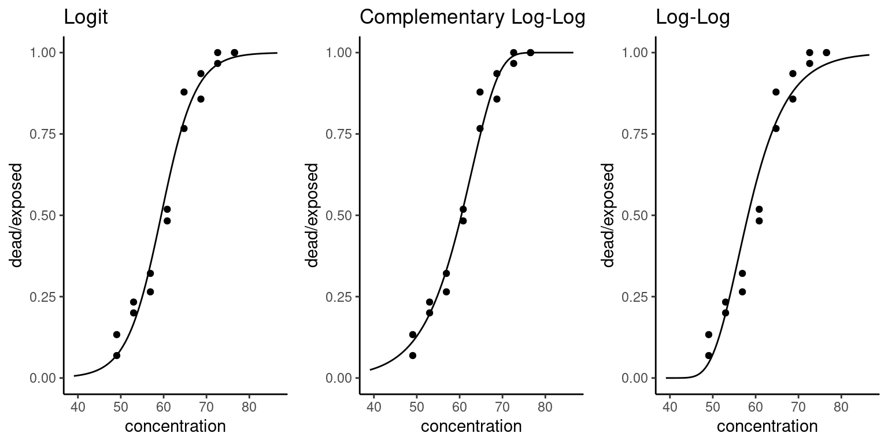
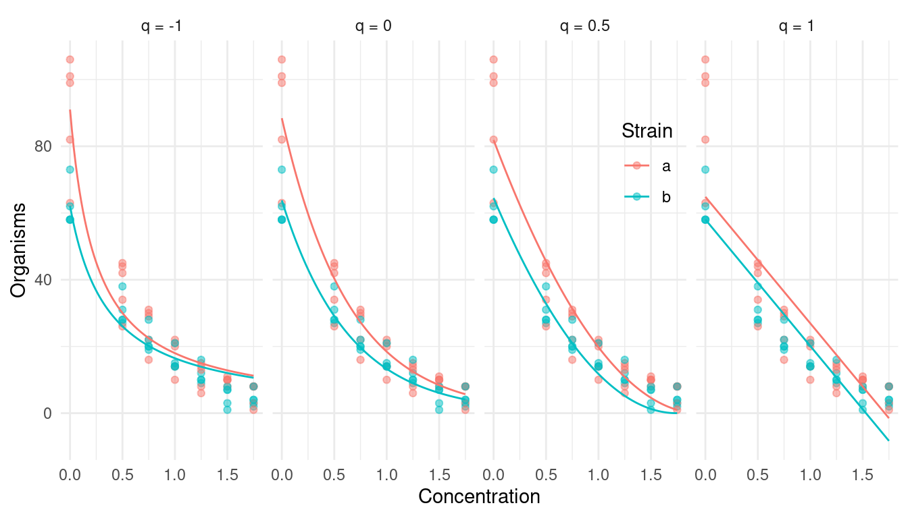

You can also download a PDF copy of this lecture.
Recall that a link function \(g\) in a generalized linear model (or extensions thereof) is a function so that \[ g[E(Y)] = \eta \ \ \text{where} \ \ \eta = \beta_0 + \beta_1x_1 + \cdots + \beta_kx_k. \] This gives us the mean structure \[ E(Y) = g^{-1}(\eta). \] Note: To keep the notation clean I will omit the observation index \(i\).
It is useful to distinguish between two families of link functions: those for binomial regression and those for regression models for positive (or non-negative) response variables.
Let \(Y\) be a proportion or binary response variable. The logit link function is defined as \[ g[E(Y)] = \log\left[\frac{E(Y)}{1-E(Y)}\right], \] which implies the mean structure \[ E(Y) = \frac{e^{\eta}}{1+e^{\eta}}. \] Properties:
“Symmetric” in the sense that \(g(z) = -g(1-z)\). Whether we model the probability of one event or the other is only a choice of parameterization.
Allows (easy) use of odds ratios.
Connects logistic regression to a variety of models (e.g., multinomial regression) and designs (e.g., case-control studies).
Known as logit in functions like glm. The
inverse function \(e^z/(1 + e^z)\) is
known to R as plogis. This is the default link function for
the binomial family.
Example: It is useful to note the “symmetry” of the model in that we can model either the event or its complement.
library(trtools) # for bliss data
# modeling the probability of beetle death
m <- glm(cbind(dead, exposed - dead) ~ concentration,
family = binomial(link = logit), data = bliss)
summary(m)$coefficients Estimate Std. Error z value Pr(>|z|)
(Intercept) -14.8084 1.28976 -11.48 1.633e-30
concentration 0.2492 0.02138 11.65 2.250e-31# modeling the probability of beetle survival
m <- glm(cbind(exposed - dead, dead) ~ concentration,
family = binomial(link = logit), data = bliss)
summary(m)$coefficients Estimate Std. Error z value Pr(>|z|)
(Intercept) 14.8084 1.28976 11.48 1.633e-30
concentration -0.2492 0.02138 -11.65 2.250e-31Defined as \[
g[E(Y)] = \log[-\log[1-E(Y)]],
\] which implies the mean structure \[
E(Y_i) = 1 - e^{-e^{\eta_i}}.
\] Known as cloglog to functions like
glm.
Properties:
Not symmetric. Approaches 1 faster than 0.
Variety of applications in bio-assay, epidemiology, and survival analysis.
Can be used when the observed response is assumed to depend on an underlying Poisson-distributed count. Let \(Z\) be an unobserved response with a Poisson distribution with mean \(e^{\eta}\), and let \[ Y_i = \begin{cases} 1, & \text{if $Z > 0$}, \\ 0, & \text{if $Z = 0$}. \end{cases} \] Because \[ P(Z = z) = \frac{\lambda^z e^{-\lambda}}{z!} \] then \[ P(Y = 1) = 1 - P(Z = 0) = 1 - e^{-\lambda}. \] Assuming a Poisson regression model such that \(\eta = \exp(\beta_0 + \beta_1 x_1 + \cdots + \beta_k x_k)\) then \[ P(Y = 1) = 1 - e^{-e^{\eta}}. \]
Example: Suppose have the Poisson regression model \[ E(Z_i) = \exp(\beta_0 + \beta_1 x_i), \] but we only observe if the count is greater than zero so what we observe is the binary response \[ Y_i = \begin{cases} 1, & \text{if $Z_i > 0$}, \\ 0, & \text{if $Z_i = 0$}. \end{cases} \] We can make inferences concerning this model using \(Y_i\) in a binomial regression model with the complementary log-log link function.
set.seed(123) # to reproduce results
n <- 1000 # sample size
b0 <- 0
b1 <- 1
# simulate data
d <- data.frame(x = seq(-2, 2, length = n))
d$z <- rpois(n, lambda = exp(b0 + b1*d$x))
# Poisson regression
m <- glm(z ~ x, family = poisson, data = d)
cbind(summary(m)$coefficients, confint(m)) Estimate Std. Error z value Pr(>|z|) 2.5 % 97.5 %
(Intercept) 0.0007196 0.03823 0.01882 9.850e-01 -0.07538 0.07451
x 0.9924397 0.02811 35.30285 5.309e-273 0.93787 1.04808d$y <- ifelse(d$z > 0, 1, 0) # create binary response
# binomial regression with complementary log-log link function
m <- glm(y ~ x, family = binomial(link = cloglog), data = d)
cbind(summary(m)$coefficients, confint(m)) Estimate Std. Error z value Pr(>|z|) 2.5 % 97.5 %
(Intercept) -0.04887 0.05197 -0.9404 3.470e-01 -0.1521 0.05189
x 0.99871 0.05741 17.3966 8.759e-68 0.8902 1.11292Note the similarities (and differences) in the inferences.
Defined as \[ g[E(Y)] = \log[-\log E(Y)] \] which implies the mean structure \[ E(Y) = e^{-e^{\eta}}. \] Properties:
Not symmetric. Approaches 1 slower than it approaches 0.
Not usually available in software, but is available as
loglog from the trtools package.
Related to the complementary log-log link function in that if the probability of an event occurring is modeled using a complementary log-log link function, then the probability of an event not occurring can be modeled using the log-log link function.
Example: The following two models are equivalent.
library(trtools) # for bliss data and loglog link function
m <- glm(cbind(dead, exposed - dead) ~ concentration,
family = binomial(link = loglog), data = bliss)
summary(m)$coefficients Estimate Std. Error z value Pr(>|z|)
(Intercept) -9.0582 0.7281 -12.44 1.557e-35
concentration 0.1619 0.0127 12.74 3.361e-37m <- glm(cbind(exposed - dead, dead) ~ concentration,
family = binomial(link = cloglog), data = bliss)
summary(m)$coefficients Estimate Std. Error z value Pr(>|z|)
(Intercept) 9.0582 0.7281 12.44 1.557e-35
concentration -0.1619 0.0127 -12.74 3.361e-37Example: Consider again the bliss data.
The link function is specified through
family = binomial(link = X) where X is
logit, cloglog, and loglog. Note
that we can use these link functions for other “families” such as
quasi and quasibinomial.

There are other link functions available in R including
probit and cauchit. In theory, there are an
infinity of link functions that could be considered. But here we will
consider some nicely motivated link functions that have been used in
practice.
Logistic regression has the mean structure \[ E(Y) = \frac{e^{\eta}}{1 + e^{\eta}}, \] such that \(E(Y) \rightarrow 1\) as \(\eta \rightarrow \infty\) and \(E(Y) \rightarrow 0\) as \(\eta \rightarrow -\infty\). And recall that \(E(Y)\) is also the probability of the event. In some cases it may not be true that \(E(Y) \rightarrow 0\) as \(\eta \rightarrow -\infty\).
For simplicity, consider the case where \(Y\) is a binary response so that \(Y = 0\) or \(Y = 1\). Let \(N\) be the event that we observe a natural response and \(\bar{N}\) the event that we do not observe a natural response. Then \[ P(Y = 1) = P(Y = 1|N)P(N) + P(Y = 1|\bar{N})P(\bar{N}) = P(N) + P(Y = 1|\bar{N})P(\bar{N}), \] noting that \(P(Y=1|N) = 1\). If we let \(P(N) = \gamma\) and assume that the “non-natural” response follows a logistic regression model so that \[ P(Y = 1|\bar{N}) = \frac{e^{\eta}}{1 + e^{\eta}}, \] then \[ P(Y = 1) = \gamma + (1-\gamma)\frac{e^{\eta}}{1 + e^{\eta}}, \] noting that \(P(\bar{N}) = 1 - P(N) = 1 - \gamma\). In general we can write \[ E(Y) = \gamma + (1-\gamma)\frac{e^{\eta}}{1 + e^{\eta}}, \]
or \[ \log\left[\frac{E(Y)-\gamma}{1 - E(Y)}\right] = \eta. \] This effectively requires us to modify the link function if \(\gamma > 0\). For making inferences we must consider two cases: (1) \(\gamma\) is known and can be specified as part of the link function, and (2) \(\gamma\) is unknown and must be estimated as an additional parameter. Also note that we can have a natural response variants of other link functions.
Example: Consider again the bliss data.
Suppose we know that \(\gamma\) = 0.1 (i.e., there is a
probability of 0.1 that a beetle will die naturally during the
experiment and not due to exposure to carbon disulphide).
m <- glm(cbind(dead, exposed - dead) ~ concentration,
data = bliss, family = binomial)
summary(m)$coefficients Estimate Std. Error z value Pr(>|z|)
(Intercept) -14.8084 1.28976 -11.48 1.633e-30
concentration 0.2492 0.02138 11.65 2.250e-31Using the natural response link function sometimes requires starting values. An easy way to specify them is to take estimates when using the logit link function.
m.nr <- glm(cbind(dead, exposed - dead) ~ concentration, data = bliss,
family = binomial(link = logitnr(0.1)), start = c(-14.8, 0.25))
summary(m.nr)$coefficients Estimate Std. Error z value Pr(>|z|)
(Intercept) -19.1284 2.12267 -9.011 2.033e-19
concentration 0.3138 0.03403 9.220 2.982e-20Note that logitnr is from the trtools
package. The interpretation of an odds ratio for this model would be for
the odds of death due to carbon disulphide (rather than
“natural causes”).
d <- data.frame(concentration = seq(40, 80, length = 100))
d$yhat <- predict(m, newdata = d, type = "response")
d$yhat.nr <- predict(m.nr, newdata = d, type = "response")
p <- ggplot(bliss, aes(x = concentration, y = dead/exposed)) +
geom_point() + ylim(0,1) + labs(x = "Concentration", y = "Proportion") +
geom_line(aes(y = yhat), data = d) + theme_classic() +
geom_line(aes(y = yhat.nr), data = d, linetype = 2) +
geom_hline(yintercept = 0.1, color = grey(0.5))
plot(p)When \(\gamma\) is unknown the model is no longer a traditional GLM because there is an unknown parameter in the link function. But we can make inferences using maximum likelihood. This requires a bit of programming.
Example: Consider again the bliss data
and model with the logit link function with a natural response. The
log-likelihood function is \[
\log L = \sum_{i=1}^n \log
\left[\frac{m_i!}{r_i!(m_i-r_i)!}p_i^{r_i}(1-p_i)^{m_i-r_i}\right]
\] where \[
p_i = \gamma + (1 - \gamma)\frac{e^{\eta_i}}{1 + e^{\eta_i}} \ \
\text{and} \ \ \eta_i = \beta_0 + \beta_1 d_i,
\] where \(d_i\) is dose.
We can program the negative log-likelihood function.
nloglik <- function(beta0, beta1, gamma) {
eta <- beta0 + beta1 * concentration
prb <- gamma + (1 - gamma) * plogis(eta)
return(-sum(dbinom(dead, exposed, prb, log = TRUE)))
}Now we can use another function (mle2) that will solve
the maximization (minimization) problem.
library(bbmle)
m <- mle2(nloglik, data = bliss, method = "L-BFGS-B",
start = list(beta0 = -15, beta1 = 0.25, gamma = 0.1),
lower = list(beta0 = -Inf, beta1 = -Inf, gamma = 0),
upper = list(beta0 = Inf, beta1 = Inf, gamma = 1))
summary(m)Maximum likelihood estimation
Call:
mle2(minuslogl = nloglik, start = list(beta0 = -15, beta1 = 0.25,
gamma = 0.1), method = "L-BFGS-B", data = bliss, lower = list(beta0 = -Inf,
beta1 = -Inf, gamma = 0), upper = list(beta0 = Inf, beta1 = Inf,
gamma = 1))
Coefficients:
Estimate Std. Error z value Pr(z)
beta0 -19.6470 3.1590 -6.22 5e-10 ***
beta1 0.3214 0.0487 6.60 4e-11 ***
gamma 0.1115 0.0495 2.25 0.024 *
---
Signif. codes: 0 '***' 0.001 '**' 0.01 '*' 0.05 '.' 0.1 ' ' 1
-2 log L: 50.48 trtools::lincon(m, a = c(0,1,0), tf = exp, fest = coef, fcov = vcov) # odds ratio estimate lower upper
(0,1,0),0 1.379 1.254 1.517We can also consider a variation on the “natural response” link
function where the upper asymptote is \(\delta < 1\), or both lower and upper
asymptotes of \(0 < \gamma < \delta <
1\). The model is then \[
E(Y) = \gamma + (\delta - \gamma)\frac{e^{\eta}}{1 + e^{\eta}}.
\] A model with just an upper asymptote of \(\delta < 1\) would be \[
E(Y) = \delta\frac{e^{\eta}}{1 + e^{\eta}}.
\] An example of an application with an upper asymptote of \(\delta\) < 0 might be seed germination
(some seeds are “duds” and will never germinate). In the
trtools package there is a link function called
logitnnr which works like logitnr except it
specifies an upper asymptote of \(\delta < 0\).
Using a log link function for binomial regression allows us to interpret exponentiated parameters/contrasts in terms of risk ratios (i.e., ratios of probabilities) instead of odds ratios.
Example: Consider the aflatoxicol study.
library(Sleuth3)
p <- ggplot(ex2116, aes(x = Dose, y = Tumor/Total)) +
geom_point(alpha = 0.5) + theme_classic() + ylim(0, 1) +
labs(x = "Dose (ppm)", y = "Proportion of Trout With Liver Tumors")
plot(p)Here we will treat dose as a factor. With the logit link function we can make inferences using odds ratios.
m <- glm(cbind(Tumor, Total - Tumor) ~ factor(Dose),
family = binomial(link = logit), data = ex2116)
trtools::contrast(m, tf = exp,
a = list(Dose = c(0.025,0.05,0.1,0.25)),
b = list(Dose = 0.01),
cnames = paste(c(0.025,0.05,0.1,0.25), "vs 0.01")) estimate lower upper
0.025 vs 0.01 7.945 5.01 12.60
0.05 vs 0.01 22.920 14.45 36.36
0.1 vs 0.01 48.909 30.24 79.10
0.25 vs 0.01 70.840 42.84 117.13But using a log link gives us risk ratios.
m <- glm(cbind(Tumor, Total - Tumor) ~ factor(Dose),
family = binomial(link = log), data = ex2116)
trtools::contrast(m, tf = exp,
a = list(Dose = c(0.025,0.05,0.1,0.25)),
b = list(Dose = 0.01),
cnames = paste(c(0.025,0.05,0.1,0.25), "vs 0.01")) estimate lower upper
0.025 vs 0.01 5.295 3.547 7.905
0.05 vs 0.01 8.886 6.043 13.068
0.1 vs 0.01 10.987 7.503 16.087
0.25 vs 0.01 11.745 8.029 17.180But be careful using the log link function with binomial regression, particularly with quantitative explanatory variables. It can produce estimated “probabilities” outside \((0,1)\).
Suppose that the probability of “survival” each time unit (e.g., day)
is \(\pi\), and assume that \[
\pi = \frac{e^{\eta}}{1 + e^{\eta}},
\] where \(\eta = \beta_0 + \beta_1 x_1
+ \beta_2 x_2 + \cdots + \beta_k x_k\) as in a logistic
regression model. But we do not observe survival for each time unit,
only if there is survival for at least \(t\) units. Let \(Y\) = 1 if there is survival for at least
\(t\) units, and \(Y\) = 0 otherwise. Then it can be shown
that \[
E(Y) = P(Y = 1) = \left(\frac{e^{\eta}}{1 + e^{\eta}}\right)^t.
\] This implies the logistic-exposure link function
\[
\log\left[\frac{E(Y)^{1/t}}{1 + E(Y)^{1/t}}\right] = \eta.
\] I have added this link function to trtools as
logitexp.
Example: Suppose we have the following data.
library(dplyr)
set.seed(123)
b0 <- 2
b1 <- 1
d <- data.frame(x = seq(0, 3, length = 1000)) %>%
mutate(days = sample(1:10, n(), replace = TRUE)) %>%
mutate(y = rbinom(n(), 1, plogis(b0 + b1*x)^days))
head(d) x days y
1 0.000000 3 1
2 0.003003 3 1
3 0.006006 10 0
4 0.009009 2 0
5 0.012012 6 1
6 0.015015 5 0We can estimate the logistic-exposure model as follows.
library(trtools) # for logitexp link function
m <- glm(y ~ x, family = binomial(link = logitexp(exposure = d$days)), data = d)
cbind(summary(m)$coefficients, confint(m)) Estimate Std. Error z value Pr(>|z|) 2.5 % 97.5 %
(Intercept) 1.895 0.1198 15.82 2.401e-56 1.6624 2.135
x 1.038 0.1003 10.35 4.315e-25 0.8441 1.241Suppose \(Z\) has a binomial distribution consistent with a logistic regression model so that \[ E(Z/m) = \frac{e^{\eta}}{1 + e^{\eta}}, \] where \(\eta = \beta_0 + \beta_1 x_1 + \beta_2 x_2 + \cdots + \beta_k x_k\). But we only observe \(Y\) where \[ Y = \begin{cases} 1, & \text{if $Z > 0$}, \\ 0, & \text{if $Z = 0$}. \end{cases} \] This implies that \[ E(Y) = P(Y = 1) = 1 - (1 - \pi)^m, \] where \(\pi = E(Z/m)\). Then the link function for \(Y\) is \[ \log[(1-\pi)^{1/m}-1] = \eta. \] This can be applied in composite sampling designs where a composite of \(m\) samples (e.g., blood, water, soil) will test positive collectively if any one of them would test positive individually.
Example: Suppose we have the following data.
library(dplyr)
set.seed(123)
d <- data.frame(m = sample(c(25,50,100,400), 100, replace = TRUE)) %>%
mutate(x = seq(-2, 2, length = n())) %>%
mutate(z = rbinom(n(), m, plogis(-5 + x/5)))
head(d) m x z
1 100 -2.000 0
2 100 -1.960 0
3 100 -1.919 0
4 50 -1.879 1
5 100 -1.838 0
6 50 -1.798 1And assume that the model for \(Z\) is a logistic regression model.
m <- glm(cbind(z, m - z) ~ x, family = binomial(link = logit), data = d)
summary(m)$coefficients Estimate Std. Error z value Pr(>|z|)
(Intercept) -5.0306 0.1182 -42.566 0.00000
x 0.2443 0.1024 2.385 0.01706But now suppose we only observe \(Y\) as defined above.
d <- d %>% mutate(y = ifelse(z > 0, 1, 0))
head(d) m x z y
1 100 -2.000 0 0
2 100 -1.960 0 0
3 100 -1.919 0 0
4 50 -1.879 1 1
5 100 -1.838 0 0
6 50 -1.798 1 1The model for \(Y\) is a binomial regression model with the link function given above.
library(trtools) # for the logitcomp link function
m <- glm(y ~ x, family = binomial(link = logitcomp(d$m)), data = d)
summary(m)$coefficients Estimate Std. Error z value Pr(>|z|)
(Intercept) -5.015 0.1730 -28.986 9.762e-185
x 0.143 0.1476 0.969 3.326e-01Suppose that \(Z\) is a binary variable that is an indicator variable for the presence of a disease such that \[ Z = \begin{cases} 1, & \text{if the subject has the disease}, \\ 0, & \text{if the subject does not have the disease}. \end{cases} \] But assume we do not observe \(Z\) but instead observe only \(Y\) which is an indicator variable for a diagnostic test for the disease such that \[ Y = \begin{cases} 1, & \text{if the subject tests positive for the disease}, \\ 0, & \text{if the subject tests negative for the disease}. \end{cases} \] Diagnostic test accuracy is defined in terms of the sensitivity and specificity of the test, where \[ \text{sensitivity} = P(\text{test positive}|\text{disease}) = P(Y = 1|Z = 1) \] and \[ \text{specificity} = P(\text{test negative}|\text{no disease}) = P(Y = 0|Z = 0). \] This implies that \[ P(Y = 1) = \underbrace{P(Y = 1|Z = 1)}_{\text{sensitivity}}P(Z = 1) + [1 - \underbrace{P(Y = 0|Z = 0)}_{\text{specificity}}]P(Z = 0). \] So if the model for the disease is a binary logistic regression model such that \[ E(Z) = P(Z = 1) = \frac{e^{\eta}}{1 + e^{\eta}}, \] where \(\eta = \beta_0 + \beta_1 x_1 + \cdots + \beta_k x_k\), then we have that the model for the test result is \[ E(Y) = P(Y = 1) = \text{sensitivity} \times \frac{e^{\eta}}{1 + e^{\eta}} + (1 - \text{specificity})\left(1 - \frac{e^{\eta}}{1 + e^{\eta}}\right). \] The link function can then be written as \[ \log\left[\frac{E(Y) - (1 - \text{specificity})}{\text{sensitivity} - E(Y)}\right] = \eta. \] Example: Suppose we have the following data.
library(dplyr)
set.seed(111)
d <- data.frame(x = seq(-3, 3, length = 1000)) %>%
mutate(z = rbinom(n(), 1, plogis(x)))
head(d) x z
1 -3.000 0
2 -2.994 0
3 -2.988 0
4 -2.982 0
5 -2.976 0
6 -2.970 0tail(d) x z
995 2.970 1
996 2.976 0
997 2.982 1
998 2.988 1
999 2.994 1
1000 3.000 1Here is a model for the disease indicator.
m <- glm(z ~ x, family = binomial(link = logit), data = d)
summary(m)$coefficients Estimate Std. Error z value Pr(>|z|)
(Intercept) 0.1223 0.08262 1.481 1.387e-01
x 1.0345 0.06182 16.734 7.468e-63But suppose we have to use a diagnostic test with a sensitivity of 0.8 and a specificity of 0.9. Here is the data with the diagnostic test result.
d <- d %>%
mutate(y = rbinom(n(), 1, ifelse(z == 1, 0.8, 1 - 0.9)))
head(d) x z y
1 -3.000 0 1
2 -2.994 0 0
3 -2.988 0 0
4 -2.982 0 0
5 -2.976 0 0
6 -2.970 0 0tail(d) x z y
995 2.970 1 1
996 2.976 0 0
997 2.982 1 1
998 2.988 1 0
999 2.994 1 1
1000 3.000 1 1Here is the model using the diagnostic test as the response variable.
library(trtools) # for logiterr link function
m <- glm(y ~ x, family = binomial(link = logiterr(0.8,0.9)), data = d)
summary(m)$coefficients Estimate Std. Error z value Pr(>|z|)
(Intercept) 0.08441 0.1274 0.6627 5.075e-01
x 0.96575 0.1063 9.0829 1.057e-19The “power” family of link functions is defined as \[
g[E(Y)] =
\begin{cases}
E(Y)^q, & \text{if $q \neq 0$}, \\
\log E(Y) & \text{if $q = 0$},
\end{cases}
\] so that \[
E(Y) =
\begin{cases}
\eta^{1/q}, & \text{if $q \neq 0$}, \\
e^{\eta}, & \text{if $q = 0$}.
\end{cases}
\] This includes several common link functions such as log (\(q\) = 0), identity (\(q\) = 1), reciprocal (\(q\) = -1), and square root (\(q\) = 0.5). These can be specified as
link = log, link = identity,
link = reciprocal, and link = sqrt,
respectively. Alternatively you can use
family = tweedie(link = q, variance = p) for any value of
\(q\) (recall that tweedie
is from the statmod package).
Example: Here are models with different power link
functions for the ceriodaphniastrain data.

One could try to estimate the power of the link function using maximum likelihood (much like we did for the natural response link function). But in that case it is useful to use the link function \[ g[E(Y)] = \begin{cases} \frac{E(Y)^q - 1}{q}, & \text{if $q \neq 0$}, \\ \log E(Y), & \text{if $q = 0$} \end{cases} \] to make the function continuous with respect to \(q\). This particular form uses the fact that \[ \lim_{q \rightarrow 0} \frac{E(Y)^q - 1}{q} = \log E(Y). \] It can be shown that this is a re-parameterization of the power link function given above, but this form is better for numerical reasons when trying to estimate \(q\) as a parameter.